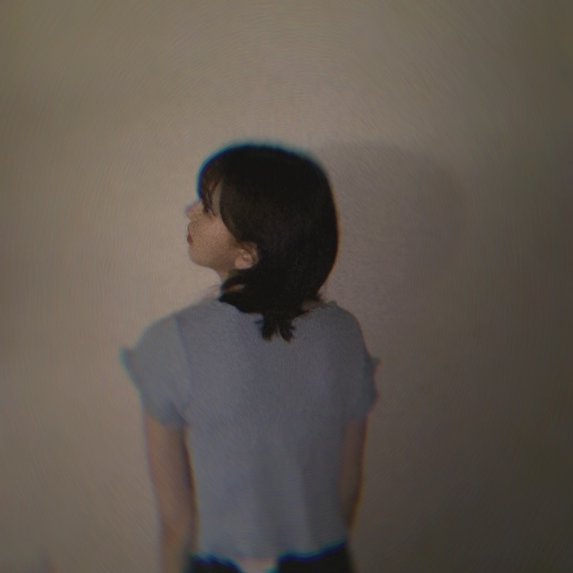

2020/0727Mon夏のせいらしい
"夏のせい"
聞かなきゃ
MVもたのしみ
おはようございます
最近はおNEWのゲームにハマってます
わたしはピットが使いやすいです
あとはお味噌汁も相変わらずブームだし
昨日たべた明太子チーズをフランスパンに
つけて食べたのもハマりそう...
あ
でも最近食べすぎてるから控えなきゃなんですよ
ヘルシー思考で、頑張ります^ - ^
きゃぴ
淡いみずいろがやはりお気に入りです！
肌馴染みいいです
あとデニムもよく履くかなぁ
かわいいデニムとスニーカーほしいなぁ
最近は歌番組の収録がいろいろあって
楽しいです^ - ^
空き時間にメンバーと話すのが
やっぱり好きだなぁ
真夏さん面白かった、昨日。笑

セルフ撮影
フラッシュたいて
タイマーで撮ってます^ - ^
フィルムカメラ極めたい〜
誰か教えてください〜
最近髪色が抜けてパープルピンクみが
少しでてきてわくわくしています
自分らしさはなにかなと考えたとき
ブレない軸と
深い探究心と
宇宙感と
うーん
でも自分の意見を持ってるところ
といいますか周りや流行に流されないところは
割と、自分でもすきです
みんなが好きだから、
みたいな流れにのまれてそれを良しと言う人間になるのではなく自分の目でみて、感じて良いと思ったものを
好きだと、良いと言える人でありたいです
今日は晴れたね〜^ - ^
ではは
2020/07/27 10:24
コメント(218)
ブログ更新ありがとう!!
サングラスかっこいい✨
サングラスかっこいい✨
真夏の全国ツアー来年こそはできるといいです！タオルと名前入りサイリウム持って駆けつけます！大好きです！
考え方とか生き方凄い好きです。
こんばんは。
「夏のせい」聞いてみたい！
ホットギミックのBlu-ray、DVDの発売決まったね。
今から楽しみです。
昨日の乃木坂工事中見たよ。堀ちゃんあんな感じなんやね（笑）
「夏のせい」聞いてみたい！
ホットギミックのBlu-ray、DVDの発売決まったね。
今から楽しみです。
昨日の乃木坂工事中見たよ。堀ちゃんあんな感じなんやね（笑）
堀ちゃんの考え方・・・好きです！！
人間性がすごく良いよね。そういうのも好きです！
人間性がすごく良いよね。そういうのも好きです！
ゲッコウガも良いと思います。
可愛い！
未央なさん、今晩は先週の連休は雨が降っていたので前に撮った写真を整理しながら、乃木坂の東京ドームコンサートを見ながらゆっくりしていました、写真をセルフでとる時は、カメラの露出を解放気味にして、シヤッタースピードを調整しながら、フラッシュをたいて撮って見て下さい、たまに自分もセルフで撮って見る事がありますが、中々難しいです、毎日雨が降って居るので、体調を崩さない様に注意してくださいね。
未央奈！
仕事終わりにブログ見てるけど、すごく癒されます〜
ありがとう。
明日は早番で朝早いので、早く寝れるようにがんばろ。
周りに流されない。素敵だと思います。
自分も周りの人が好きとか言ってるものに流されるのは嫌です。自分でみて、自分で判断したい。
山形は天気わるかたよー
では
仕事終わりにブログ見てるけど、すごく癒されます〜
ありがとう。
明日は早番で朝早いので、早く寝れるようにがんばろ。
周りに流されない。素敵だと思います。
自分も周りの人が好きとか言ってるものに流されるのは嫌です。自分でみて、自分で判断したい。
山形は天気わるかたよー
では
更新ありがとう❤
写真かわいい～❤
特にピースしてウインクしてる写真にキュン
写真かわいい～❤
特にピースしてウインクしてる写真にキュン
みおなさんへ
ゲームですが今のゲームよりもレトロゲームをお勧めします。
80年代のゲームをやったらどうかな？と思います。
ゲームですが今のゲームよりもレトロゲームをお勧めします。
80年代のゲームをやったらどうかな？と思います。
更新ありがとう
乃木中おもしろかったよ
乃木中おもしろかったよ
未央奈ブログ更新ありがと！
スマブラ始めたのかな？
無難にマリオもめちゃ使いやすいから使ってみて！
最近は自粛ムードじゃなくなってきて歌番組とか沢山はじまってきてるよね
未央奈がとても楽しそうで何より
未央奈の自分を曲げない所大好き
これからも頑張って欲しい！
スマブラ始めたのかな？
無難にマリオもめちゃ使いやすいから使ってみて！
最近は自粛ムードじゃなくなってきて歌番組とか沢山はじまってきてるよね
未央奈がとても楽しそうで何より
未央奈の自分を曲げない所大好き
これからも頑張って欲しい！
未央奈さん、こんばんは
フランスパンに明太子チーズ
美味しそうですね
涼しげな格好よく似合ってます
最高の笑顔ありがとう(^_^)
真夏さんに可愛がって
もらえて嬉しいね
たくさんイジってあげて笑
未央奈さんの自分らしさとは
どこか研究者にも似ていて
素晴らしく思います
自分も見習わなくっちゃです！
空見てます(^_^)
またコメントしますね
フランスパンに明太子チーズ
美味しそうですね
涼しげな格好よく似合ってます
最高の笑顔ありがとう(^_^)
真夏さんに可愛がって
もらえて嬉しいね
たくさんイジってあげて笑
未央奈さんの自分らしさとは
どこか研究者にも似ていて
素晴らしく思います
自分も見習わなくっちゃです！
空見てます(^_^)
またコメントしますね
お疲れ様です!
明太子チーズのったフランスパン、美味しいよね！
歌番組で沢山見れて自分も嬉しいです！
カメラ極めたら自撮りで写真集出せそうですね！！！
カメラ極めたら自撮りで写真集出せそうですね！！！
明太子フランスパン、美味しいですよね！
さらにチーズも加わったら、最強だなぁ♪
フィルムカメラ、今は持ってる人も限られてますから、なかなか教わる機会もないかもですね☆
さらにチーズも加わったら、最強だなぁ♪
フィルムカメラ、今は持ってる人も限られてますから、なかなか教わる機会もないかもですね☆
昨日写真集買いました！
可愛いだけじゃなくて美しさもあって、そして美意識の高さを強く感じた！
これからも応援してます！
可愛いだけじゃなくて美しさもあって、そして美意識の高さを強く感じた！
これからも応援してます！
こんばんは
夏のせい夏らしいですよね♪
新ゲーム楽しんでるのですね～
ヘルシー思考とても素敵です✨
淡い水色とても似合ってます！
夏ファッション楽しみですよ☆
歌番組も始まって嬉しいですー！
メンバーとの時間も貴重ですね✴
セルフ撮影とっても魅力的です！
自分らしさ凄く素晴らしいです✌
スペーシーな魅力も魅力的です♡☺
夏のせい夏らしいですよね♪
新ゲーム楽しんでるのですね～
ヘルシー思考とても素敵です✨
淡い水色とても似合ってます！
夏ファッション楽しみですよ☆
歌番組も始まって嬉しいですー！
メンバーとの時間も貴重ですね✴
セルフ撮影とっても魅力的です！
自分らしさ凄く素晴らしいです✌
スペーシーな魅力も魅力的です♡☺
未央奈ちゃん、こんばんは
モバメでも新しいゲーム始めたって書いてたね✨任天堂のあのゲームかな？
歌番組の収録たくさんしたんだね また歌って踊ってる未央奈ちゃんが見られるの楽しみ✨
美味しそうにご飯食べる未央奈ちゃんが好きだよ
モバメでも新しいゲーム始めたって書いてたね✨任天堂のあのゲームかな？
歌番組の収録たくさんしたんだね また歌って踊ってる未央奈ちゃんが見られるの楽しみ✨
美味しそうにご飯食べる未央奈ちゃんが好きだよ
堀ちゃん、大好きだよー
未央奈ブログ更新ありがとう！
夏のせい僕はまだ聴いてなくて気になる。
明太子チーズフランス食べたことないけど美味しそうだね。
ウインクもカチューシャも可愛い。やっぱり淡い水色似合うね。
歌番組収録と聞くと放送が楽しみだなあ。
フィルムカメラ面白いよね。極めると光学の勉強になりそう。
なるほど未央奈が思う自分らしさはそういうところなんだね。確かに自分の意見を持ってるところは未央奈らしさかも。
宇宙感ってホットギミックを思い出すよね。宇宙感じるよって言いたい。
では！
夏のせい僕はまだ聴いてなくて気になる。
明太子チーズフランス食べたことないけど美味しそうだね。
ウインクもカチューシャも可愛い。やっぱり淡い水色似合うね。
歌番組収録と聞くと放送が楽しみだなあ。
フィルムカメラ面白いよね。極めると光学の勉強になりそう。
なるほど未央奈が思う自分らしさはそういうところなんだね。確かに自分の意見を持ってるところは未央奈らしさかも。
宇宙感ってホットギミックを思い出すよね。宇宙感じるよって言いたい。
では！
未央奈ちゃんは真夏ちゃんにイジラレてなんぼ
真夏ちゃんはメンバーの人からたくさんいじられて
幸せだよね！
セルフ撮影撮るの上手い！
真夏ちゃんはメンバーの人からたくさんいじられて
幸せだよね！
セルフ撮影撮るの上手い！
こんばんはー☆
ブログ更新ありがとね！ちょっとコメント遅くなっちゃった。すまん(珠ちゃんw)
夏のせい？RADWIMPS？
ピット？スマブラ？むむー？
味噌汁は、いいよな～日本人で良かったね。
たまにいつもと違う種類の味噌を試すと新鮮で美味しくてまた良いよー！赤、白、麦、米、八丁、合わせetc.いろいろあるよね！
明太チーズフランスとか！それは間違いない！(あ、うつったw)
でも絶対美味しいよね～(。>д<)
いーんだよ、食べるときはしっかり食べてそれでちょっと抑えるときは頑張って。
あとはその分を運動したりしてカロリー消費すれば！歌やダンスも結構エネルギー使うしね！
俺はいっぱい美味しそうにもぐもぐ食べる未央奈が好きっす♪(*^^*)
きゃぴ、は可愛すぎるって。
みずいろ似合うよね！もちろん他の色も似合うけど！
未央奈のイメージカラーって感じになってきてるよね。サイリウムカラー水色もアリじゃない？
デニム俺も好き！そういう生地のバックとか小物も結構気に入って買いがちだなーw(；・∀・)
歌番組楽しみ！毎回見つけるよー↑
セルフ撮影！まわりを暗い感じにしてるのはあえてかな？かっこよさもあるけどー、撮る写真によっては照明を別に用意して合わせて撮った方が良い気がするなぁ。未央奈の可愛いさが半減してしまってるような。特に1～3枚の写真がかな！
パープルピンクみの髪の毛も見れないよー難しいね(・・;)
自分らしさかぁー、宇宙感入れてきたねw
でも、分かるよ！周りに合わせることももちろん大事だけどその中でもちゃんと自分の気持ちだったり意志を無くさずに持っていくのってすごく大事だと思う！
流行ってるものに興味を持つのも、実際に試して経験してみるのも良いけど、それで好きになれるかはその人次第なんだからそれで良いんだよね！人それぞれ、十人十色だよね。
今日晴れたけどー、やっぱり雨降ってーまた止んでーだよね(´・ω・`)?
しかも、明日も雨降るらしいよ。困った。やっとパネル展行くつもりなのに！
まぁ、どしゃ降りになっても行くけどね！間違いないさ！w
ホットギミック10/7なんだね！要チェックや！
メイキングやコメンタリーは貴重だもんねー☆
でわでわ、またねー( *・ω・)ノ
ばいちゃ
ブログ更新ありがとね！ちょっとコメント遅くなっちゃった。すまん(珠ちゃんw)
夏のせい？RADWIMPS？
ピット？スマブラ？むむー？
味噌汁は、いいよな～日本人で良かったね。
たまにいつもと違う種類の味噌を試すと新鮮で美味しくてまた良いよー！赤、白、麦、米、八丁、合わせetc.いろいろあるよね！
明太チーズフランスとか！それは間違いない！(あ、うつったw)
でも絶対美味しいよね～(。>д<)
いーんだよ、食べるときはしっかり食べてそれでちょっと抑えるときは頑張って。
あとはその分を運動したりしてカロリー消費すれば！歌やダンスも結構エネルギー使うしね！
俺はいっぱい美味しそうにもぐもぐ食べる未央奈が好きっす♪(*^^*)
きゃぴ、は可愛すぎるって。
みずいろ似合うよね！もちろん他の色も似合うけど！
未央奈のイメージカラーって感じになってきてるよね。サイリウムカラー水色もアリじゃない？
デニム俺も好き！そういう生地のバックとか小物も結構気に入って買いがちだなーw(；・∀・)
歌番組楽しみ！毎回見つけるよー↑
セルフ撮影！まわりを暗い感じにしてるのはあえてかな？かっこよさもあるけどー、撮る写真によっては照明を別に用意して合わせて撮った方が良い気がするなぁ。未央奈の可愛いさが半減してしまってるような。特に1～3枚の写真がかな！
パープルピンクみの髪の毛も見れないよー難しいね(・・;)
自分らしさかぁー、宇宙感入れてきたねw
でも、分かるよ！周りに合わせることももちろん大事だけどその中でもちゃんと自分の気持ちだったり意志を無くさずに持っていくのってすごく大事だと思う！
流行ってるものに興味を持つのも、実際に試して経験してみるのも良いけど、それで好きになれるかはその人次第なんだからそれで良いんだよね！人それぞれ、十人十色だよね。
今日晴れたけどー、やっぱり雨降ってーまた止んでーだよね(´・ω・`)?
しかも、明日も雨降るらしいよ。困った。やっとパネル展行くつもりなのに！
まぁ、どしゃ降りになっても行くけどね！間違いないさ！w
ホットギミック10/7なんだね！要チェックや！
メイキングやコメンタリーは貴重だもんねー☆
でわでわ、またねー( *・ω・)ノ
ばいちゃ
こんばんは。ブログ更新ありがとうございます。
私も趣味のギターと電子工作を相変わらず楽しんでおります。ギターは上手く弾ける時と、進歩しない日があります。どうすれば毎回着実に進歩できるか、思案中です。一方、電子工作の方は、参考書に書いてあったものを作ってみたのですが、あまり良い結果が出なかったので、自分で設計することにしました。部品の到着をまって、実験をして、また設計を見直して、の繰り返しです。
ではまた。
私も趣味のギターと電子工作を相変わらず楽しんでおります。ギターは上手く弾ける時と、進歩しない日があります。どうすれば毎回着実に進歩できるか、思案中です。一方、電子工作の方は、参考書に書いてあったものを作ってみたのですが、あまり良い結果が出なかったので、自分で設計することにしました。部品の到着をまって、実験をして、また設計を見直して、の繰り返しです。
ではまた。
堀未央奈❤こんばんは☺色々にハマってるんだね☺ゲーム新しいの買ったのかな？
歌番組の仕事増えてきたんだね☺沢山テレビで観れるね(^o^)嬉しいな(^o^)
10月7日にホットギミックのDVD出るんだね☺予約して買うからね(^-^)v
楽しみだな☺体調に気を付けて頑張ってね(*^^*)今日も愛してる❤
歌番組の仕事増えてきたんだね☺沢山テレビで観れるね(^o^)嬉しいな(^o^)
10月7日にホットギミックのDVD出るんだね☺予約して買うからね(^-^)v
楽しみだな☺体調に気を付けて頑張ってね(*^^*)今日も愛してる❤
ブログ更新ありがとう！最近暑くなってきたし、お互い体調に気を付けて頑張ろう！！次も絶対見るからね！
みおな、こんばんは！更新ありがとう。 近況報告ありがとうございます。 では、毎日みおなに良いこと沢山ありますように！ おやすみおな！！
未央奈ちゃん、沢山食べてても今回の写真みると
十分痩せてるから大丈夫だよ！
未央奈ちゃんはカシューチャがとても似合ってるし
淡い水色の半袖シャツも似合ってて美人だよ

廻りの意見や流行りに流されずに自分で良いと
感じたことを取り入れた方が損しない生き方で
とてもいいと思うよ！
俺の場合は廻りの意見や流行に関しては参考
程度に聞いてるかな！
では
十分痩せてるから大丈夫だよ！
未央奈ちゃんはカシューチャがとても似合ってるし
淡い水色の半袖シャツも似合ってて美人だよ
廻りの意見や流行りに流されずに自分で良いと
感じたことを取り入れた方が損しない生き方で
とてもいいと思うよ！
俺の場合は廻りの意見や流行に関しては参考
程度に聞いてるかな！
では
明太子チーズね。
フランスパンやトースト。パン類は特にね。
おにぎりにも合うんだろうな～
チーズとご飯も合いますもんね。
あ、高カロリートークでしたかね？(笑)
夏は特に涼しげな色でいいですよね。
歌番組ね～久々だよね～
パーブルとピンク。
どっちがアピールしてくるんですかね～
もしかして･･･ベージュ？(笑)
宇宙感(笑)
ポリシーがあるところ
いいな～って思ってますよ。
今日は暑くなっちゃうかな～？
って思ったら夜は雨だった(笑)
フランスパンやトースト。パン類は特にね。
おにぎりにも合うんだろうな～
チーズとご飯も合いますもんね。
あ、高カロリートークでしたかね？(笑)
夏は特に涼しげな色でいいですよね。
歌番組ね～久々だよね～
パーブルとピンク。
どっちがアピールしてくるんですかね～
もしかして･･･ベージュ？(笑)
宇宙感(笑)
ポリシーがあるところ
いいな～って思ってますよ。
今日は暑くなっちゃうかな～？
って思ったら夜は雨だった(笑)
ブログ更新ありがとう
アイドルさんは少しだけ変わっているところが魅力的とされているんじゃないかと思います。
堀ちゃんは、乃木坂でも堀ちゃんって立ち位置というか、
堀ちゃんは堀ちゃんしかいないというか。
自分を持っているんだね。
耳をすませばの主人公のお父さんも言ってたけど、
人と違う道を行くのはそれなりに困難です。
でも、自分の世界観を持てるって素敵です。
青、似合いますね。
僕は大好きな欅坂の菅井様が青を着ていると
菅井ブルーと言ってしまうのですが、
堀ブルーです！！(何のこっちゃ)
新曲、最高でした
何度もリピートしています。
アイドルさんは少しだけ変わっているところが魅力的とされているんじゃないかと思います。
堀ちゃんは、乃木坂でも堀ちゃんって立ち位置というか、
堀ちゃんは堀ちゃんしかいないというか。
自分を持っているんだね。
耳をすませばの主人公のお父さんも言ってたけど、
人と違う道を行くのはそれなりに困難です。
でも、自分の世界観を持てるって素敵です。
青、似合いますね。
僕は大好きな欅坂の菅井様が青を着ていると
菅井ブルーと言ってしまうのですが、
堀ブルーです！！(何のこっちゃ)
新曲、最高でした
何度もリピートしています。
堀ちゃんブログ更新ありがとう
昨日の乃木中見ました〜
みりあちゃんにしっかり真似されてて
面白かったです！
「間違いない」って頻繁に言うんですか？？
乃木坂のでる音楽番組がたくさんあって
とっても楽しみです
次のブログ更新も楽しみにしてます
昨日の乃木中見ました〜
みりあちゃんにしっかり真似されてて
面白かったです！
「間違いない」って頻繁に言うんですか？？
乃木坂のでる音楽番組がたくさんあって
とっても楽しみです
次のブログ更新も楽しみにしてます
未央ちゃんブログ更新ありがとうございます。私は、とある会の会長なんですが、その会の趣旨は「人の考えや意見、見方等に振り回されずに「自分にとっての幸せ」を求めよう」というものです。未央ちゃん私と似てる！
未央ちゃん応援してます。
未央ちゃん応援してます。
ブログ更新ありがとうございます！
味噌汁ブーム！味噌汁はいつ食べても美味しいですよね！
ゲームついついやってしまいますよね！
きゃぴ！！
次のブログも楽しみにしてます！！
味噌汁ブーム！味噌汁はいつ食べても美味しいですよね！
ゲームついついやってしまいますよね！
きゃぴ！！
次のブログも楽しみにしてます！！
未央奈ちゃんブログ更新ありがとう！
さくらちゃんとあやめちゃんとでんちゃんと同じ愛知県出身の愛知の覇王です！
蓮加ちゃんと同じ高校2年生です！
最近、歌番組で乃木坂46を見ることが多くなって、めっちゃ嬉しいです！
今度、テレビで披露する日を楽しみにしています！
昨日、真夏さんが面白かったって言ってるけど、何が面白かったんですか？
めっちゃ気になります！
教えてください！
体調を崩さないように気をつけて頑張ってください！
応援してます！
さくらちゃんとあやめちゃんとでんちゃんと同じ愛知県出身の愛知の覇王です！
蓮加ちゃんと同じ高校2年生です！
最近、歌番組で乃木坂46を見ることが多くなって、めっちゃ嬉しいです！
今度、テレビで披露する日を楽しみにしています！
昨日、真夏さんが面白かったって言ってるけど、何が面白かったんですか？
めっちゃ気になります！
教えてください！
体調を崩さないように気をつけて頑張ってください！
応援してます！
未央奈ちゃんこんばんは☺️
俺もヘルシー思考でいかなきゃ！
お洒落
可愛い♪
主観な価値観って大切 ️
明日もHAPPYを
お休みなさい(^-^ゞ
俺もヘルシー思考でいかなきゃ！
お洒落
可愛い♪
主観な価値観って大切 ️
明日もHAPPYを
お休みなさい(^-^ゞ
みおな
今日もお疲れ様です
みんなが好きだからとか流行ってるからとかで、自分も同じようにするのって俺は嫌いなので、共感できて嬉しいです
自分で見て、良い悪いとか好き嫌いを決める事ができる幸せを放棄するのは、もったいないと思います
必ずしも、流行に乗る事もないし、たまたま気に入った物が、流行ってる時もあるくらいが丁度いいです
俺も周りにブレずに行きたいです
宇宙感って乃木中でも言ってたけど、どうゆう事ですか笑
ミステリアスとか不思議系とかそうゆう事かな？
宇宙と少し違うかもだけど、星雲は綺麗だから興味あります
セルフ撮影可愛いです
いつしかのハリウッドみおなをもう一回見たいな笑（金髪ウィッグのやつでハリウッドみおなは勝手に俺が言ってるだけだけど笑）
今日はそっちは晴れたみたいだけど、こっちは一日中雨降りです
今も降ってて寒いくらいです
早く晴れて欲しいなー
長くなりましたがまたコメントするね
ありがとうございました
今日もお疲れ様です
みんなが好きだからとか流行ってるからとかで、自分も同じようにするのって俺は嫌いなので、共感できて嬉しいです
自分で見て、良い悪いとか好き嫌いを決める事ができる幸せを放棄するのは、もったいないと思います
必ずしも、流行に乗る事もないし、たまたま気に入った物が、流行ってる時もあるくらいが丁度いいです
俺も周りにブレずに行きたいです
宇宙感って乃木中でも言ってたけど、どうゆう事ですか笑
ミステリアスとか不思議系とかそうゆう事かな？
宇宙と少し違うかもだけど、星雲は綺麗だから興味あります
セルフ撮影可愛いです
いつしかのハリウッドみおなをもう一回見たいな笑（金髪ウィッグのやつでハリウッドみおなは勝手に俺が言ってるだけだけど笑）
今日はそっちは晴れたみたいだけど、こっちは一日中雨降りです
今も降ってて寒いくらいです
早く晴れて欲しいなー
長くなりましたがまたコメントするね
ありがとうございました
未央奈ブログ更新ありがとう！
昨日の乃木中面白かった〜！
宇宙感って何だ？笑
これからも未央奈らしく頑張れ！
応援してるよ！
体調には気をつけてね！
昨日の乃木中面白かった〜！
宇宙感って何だ？笑
これからも未央奈らしく頑張れ！
応援してるよ！
体調には気をつけてね！
堀さん、こんばんは。
蒸し暑さにも負けず食欲もりもりなのは健康的でよろしいですね。食べすぎと堀さんはおっしゃいますが、見た目ほっそりしたイメージは全く変わりませんよ。摂生に努めているからこそかと。さすがアイドルです（にこ）。
昨夜の『乃木坂工事中』の内輪ウケものまね、楽しかったです。渡辺さんの堀さんものまねへのコメントでは「宇宙っぽい顔」なる名言、いただきました（笑）。収録お疲れさまでした。
配信の曲も二曲を数え、歌謡番組への乃木坂46の出演が増えてきて嬉しいかぎり。次に乃木坂46が登場する番組は何かな。楽しみにしています。
ではまたコメント寄せますね。おやすみおな。
さらばだ、また会おう！（気球に乗って去りぬ〜）
蒸し暑さにも負けず食欲もりもりなのは健康的でよろしいですね。食べすぎと堀さんはおっしゃいますが、見た目ほっそりしたイメージは全く変わりませんよ。摂生に努めているからこそかと。さすがアイドルです（にこ）。
昨夜の『乃木坂工事中』の内輪ウケものまね、楽しかったです。渡辺さんの堀さんものまねへのコメントでは「宇宙っぽい顔」なる名言、いただきました（笑）。収録お疲れさまでした。
配信の曲も二曲を数え、歌謡番組への乃木坂46の出演が増えてきて嬉しいかぎり。次に乃木坂46が登場する番組は何かな。楽しみにしています。
ではまたコメント寄せますね。おやすみおな。
さらばだ、また会おう！（気球に乗って去りぬ〜）
芯のある人って良いね(^∇^)
らしさ、、きっと好きなものことの
なかにあるのかもしれませんねっ！
なかにあるのかもしれませんねっ！
未央奈ちゃん、こんばんは。
セルフ撮影、たしかに難しそうですね。
三枚目のウインク？あっかんべー？の写真めっちゃ好きです。ホント可愛いですね。
また、更新待ってます。
セルフ撮影、たしかに難しそうですね。
三枚目のウインク？あっかんべー？の写真めっちゃ好きです。ホント可愛いですね。
また、更新待ってます。
未央奈お疲れ様です！
ブログ更新ありがとう！
ヘルシー思考俺も頑張ってます笑
デニム似合う人めっちゃ好きです笑
メガネ似合うの羨ましい笑
未央奈らしさめっちゃ好き
未央奈の宇宙感好きです
これからもずっと応援してる！
がんばれー！
ブログ更新ありがとう！
ヘルシー思考俺も頑張ってます笑
デニム似合う人めっちゃ好きです笑
メガネ似合うの羨ましい笑
未央奈らしさめっちゃ好き
未央奈の宇宙感好きです
これからもずっと応援してる！
がんばれー！
深いというか広いんでは・・・！？
宇宙感とか深い探究心があれば、スター・ウォーズ・サーガだな・・・時代ごとに３万年分のストーリーがあるから！ＭＣＵ映画のインフィニティ・サーガも探究のしがいがありすぎる・・・。
今夜はハン・ソロ観てから寝よう・・・！？
明日も体調に気をつけて行きましょう。
宇宙感とか深い探究心があれば、スター・ウォーズ・サーガだな・・・時代ごとに３万年分のストーリーがあるから！ＭＣＵ映画のインフィニティ・サーガも探究のしがいがありすぎる・・・。
今夜はハン・ソロ観てから寝よう・・・！？
明日も体調に気をつけて行きましょう。
未央奈～ こんにちは
ブログ更新ありがとうございます。
昨日の工事中、もちろん見ましたよ。独特の宇宙観というか地面観、面白かったです。私たちは、この不思議な未央奈の宇宙観にすっかりハマっています。
「不思議ちゃん」、そう呼ばれたこともありましたね。
これからも未央奈は未央奈でいてくださいね。
早く会いたいよ～。スペイべも延期、この調子じゃ仕方ありませんね。
今週も、歌番組楽しみにしています。
ブログ更新ありがとうございます。
昨日の工事中、もちろん見ましたよ。独特の宇宙観というか地面観、面白かったです。私たちは、この不思議な未央奈の宇宙観にすっかりハマっています。
「不思議ちゃん」、そう呼ばれたこともありましたね。
これからも未央奈は未央奈でいてくださいね。
早く会いたいよ～。スペイべも延期、この調子じゃ仕方ありませんね。
今週も、歌番組楽しみにしています。
未央奈ちゃん、こんばんは(^o^)/
人と同じなのも良いけど、自分の感性で好きになった物に間違いはないですよね
写真なんか全体的に暗かったけど、あれでフラッシュたいてたの？
人と同じなのも良いけど、自分の感性で好きになった物に間違いはないですよね
写真なんか全体的に暗かったけど、あれでフラッシュたいてたの？
未央奈ちゃん、ブログ更新ありがとう！
おNEWのゲームってもしやスマブラ？パルテナの鏡な感じしないしなー
ピット使いやすいよね！私もよく使うよ！ピット使えるならブラックピットも使えるんじゃない？ふっとばす感覚としてはブラックピットの方が爽快感あるんだよなー。
水色の服の合わせ方が分かんない！何と合わせたらうまくいくの？
体調には気をつけてね。
おNEWのゲームってもしやスマブラ？パルテナの鏡な感じしないしなー
ピット使いやすいよね！私もよく使うよ！ピット使えるならブラックピットも使えるんじゃない？ふっとばす感覚としてはブラックピットの方が爽快感あるんだよなー。
水色の服の合わせ方が分かんない！何と合わせたらうまくいくの？
体調には気をつけてね。
いつもブログ更新ありがとうございます！
いい息抜きになります！
いい息抜きになります！


人に流されないって、実行するの意外と難しいですよね。
でも自分の芯を持って信じたものに向かって突き進んでいく未央奈さんはすごいと思いました！
セミが鳴きはじめましたね！良い夏を！